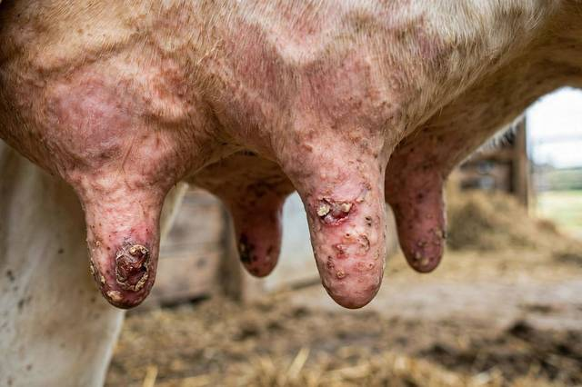
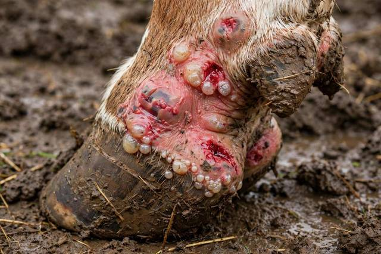
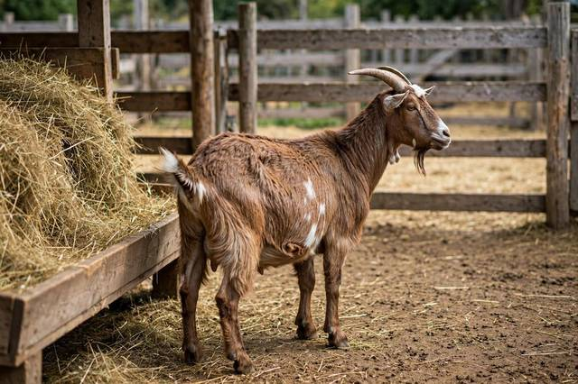
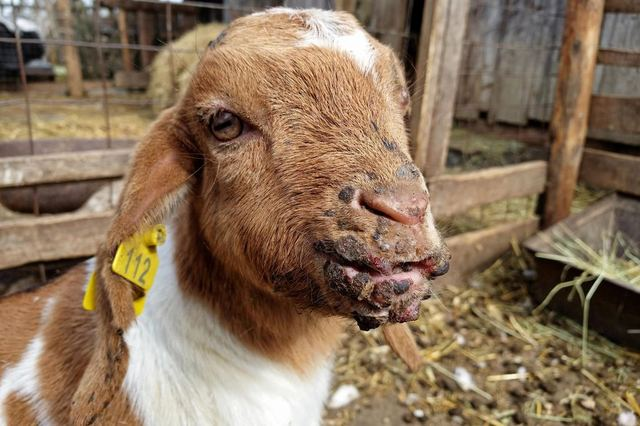
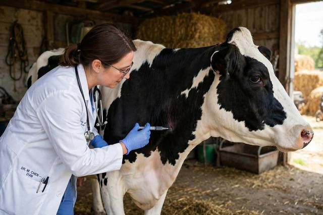

Orf, also called contagious ecthyma or sore mouth, is a contagious viral disease that causes crusty sores around the lips and mouth of goats and sheep. It is most common in kids and usually runs its course in a few weeks, but severe cases can stop young animals from feeding.
In Pakistan, orf is known as منہ کے چھالے and is common in goat kids, especially in winter. It occurs worldwide. Orf is zoonotic — it can infect people who handle affected animals, causing painful sores on the hands, so gloves should always be worn.
On this page: the cause, animals affected, clinical signs, diagnosis, treatment principles and prevention.
Cause
Orf is caused by orf virus, a parapoxvirus. It enters through small cuts and grazes around the mouth, often when animals eat rough or thorny fodder. The virus survives for months in dried scabs and in the environment, so pens and equipment can remain infective long after sick animals have recovered.
Animals Affected
Goats and sheep are the main hosts, and kids and lambs are most severely affected. Adult animals usually develop milder disease. People who handle infected animals can also be infected.
Clinical Signs
1
Thick crusty scabs and sores on the lips, around the mouth and nostrils(Crusty scabs on the lips and muzzle)
2
Sores on the udder and teats of does(Sores on the udder and teats)
3
Sores occasionally on the feet(Sores on the feet)
4
Pain when eating or suckling(Sore mouth makes feeding painful)
5
Kids refuse to feed(Affected kids refuse to suckle)
6
Weight loss(Losing weight from not feeding)
7
Secondary bacterial infection of the sores(Sores become infected)
Crusty scabs on the lips

Sores on the udder

Sores on the feetPain when eating

Kids refuse to feedWeight loss

Secondary infection
Diagnosis
The typical crusty mouth sores are usually enough for a veterinarian to suspect orf. Laboratory tests (PCR) can confirm the diagnosis if needed. Orf must be distinguished from goat pox, foot-and-mouth disease and bluetongue.
Treatment
There is no specific antiviral treatment. Care is supportive: soft palatable feed, clean water, and gentle care of the sores. Antibiotics are only used for secondary bacterial infection, under veterinary direction. Wear gloves when handling affected animals, and wash hands thoroughly afterwards.
Zoonotic warning: Orf can infect people through cuts in the skin. Always wear gloves when handling affected animals or their scabs, and wash your hands and any wounds afterwards.
Recommended Medicines
1
Antibiotic – Oxytetracycline(Only for secondary bacterial infection of the sores)10–20 mg/kg IM or SC daily (goats)
2
NSAID – Meloxicam(For pain from the sores)0.5–1 mg/kg IV/SC once (goats)
3
Topical – Topical antiseptic(For gentle care of the sores)As prescribed by a veterinarian
⚠ Important Tips:
Wear gloves when handling orf sores — orf can infect people through cuts in the skin.
Wash your hands and any wounds thoroughly afterwards.
Use antibiotics only under veterinary advice, and only if the sores become infected.
Give soft feed so sore-mouthed kids can keep eating.

Injection — vet-administered onlyMedicines — only as prescribed by a veterinarian
Prevention
Vaccinate where orf is a recurring problem (live vaccine, applied as advised by a veterinarian — note that vaccination itself produces a local sore)
Quarantine new animals before adding them to the flock
Avoid rough, thorny fodder that grazes the mouth
Disinfect feeders, water troughs and handling equipment
Isolate affected animals, especially kids, and let them recover fully before mixing
Key Takeaway
Orf is rarely fatal, but it can starve kids that cannot suckle. Supportive care, hygiene and vaccination keep it under control — and always wear gloves.
Keep herd health records, consult a qualified veterinarian and follow the animal-health authority's current guidance for your region.
Frequently Asked Questions
What are the symptoms of orf in goats?
Thick crusty scabs and sores on the lips, around the mouth and nostrils. Sores may also appear on the udder and teats of does, and occasionally on the feet. Affected kids may refuse to feed and lose weight.
What causes orf in goats?
Orf is caused by orf virus, a parapoxvirus. It enters through small cuts and grazes around the mouth, often when animals eat rough or thorny fodder. The virus survives for months in dried scabs and in the environment.
Can orf spread from goats to people?
Yes. Orf is zoonotic, and it can infect people who handle affected animals, causing painful sores on the hands. Always wear gloves when handling affected animals or their scabs, and wash your hands and any wounds afterwards.
How is orf in goats treated?
There is no specific antiviral treatment. Care is supportive: soft palatable feed, clean water and gentle care of the sores. Antibiotics are only used for secondary bacterial infection, under veterinary direction. Most animals recover within one to two months.
How can orf in goats be prevented?
Vaccinate where orf is a recurring problem, quarantine new animals, avoid rough thorny fodder that grazes the mouth, and disinfect feeders, water troughs and handling equipment.
How to treat sores on goat mouth?
Orf causes thick crusty scabs and sores on the lips and around the mouth. There is no specific antiviral treatment, so care is supportive, with soft palatable feed, clean water and gentle care of the sores.
Can humans get orf from goats?
Yes, orf is zoonotic and can infect people who handle affected animals, causing painful sores on the hands. Always wear gloves when handling affected animals or their scabs, and wash your hands and any wounds afterwards.
بکری کے منہ پر چھالے کیوں ہوتے ہیں؟
منہ کے چھالے (Orf) ایک وائرل بیماری ہے جس میں ہونٹوں اور منہ کے گرد سخت خارش والے چھالے بنتے ہیں۔ بچے دودھ نہیں پی سکتے اور کمزور ہو جاتے ہیں۔ یہ بیماری انسانوں کو بھی لگ سکتی ہے، اس لیے دستانے پہن کر ہاتھ دھوئیں۔